Actions: Add to, search, update datasets + trigger physical entities
Example task: opening physical parking gate
Menu-items: Site settings, Activity, Revenue
Revamping the Dashboard
for a client's parking site management application
Context
limited data · solo designer · timeline 4–5 weeks
The client's parking site management app worked well technically, but when presenting to executives for buy-in, UI elements like the sparse dashboard and bloated navigation menu made it challenging to showcase the app's value proposition effectively.
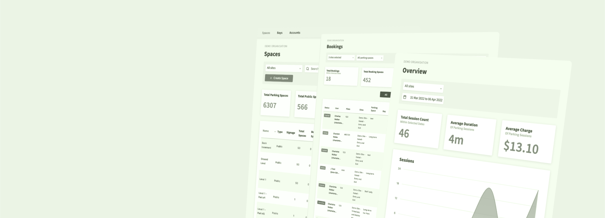
approach
In an interview workshop setting with the client, I facilitated and adopted the perspectives of two key individuals for user interviews:
- Subject matter expert & Product owner — to understand the underlying business logic and its product goals and value proposition.
- New user — to define user flows of daily users, what problems they are trying to solve and why it's needed.
It revealed the core usability issues that my user interface needed to address, especially on the main dashboard. Additionally, by defining it as a workshop, the client could participate in the design solution and help narrow the project scope to just pertinent screens and user flows.
Design Decisions
allow for gradual reveal · assess content hierarchy · reorder sidebar navigation
Map as anchor for all user flows
The map is the first element users see on the updated Dashboard. It's intentionally laid out to visually reflect the physical space that site managers work with in their mental model.
- Apply affordances to guide users from one dataset to another
- Find opportunity to use spatial assets to reduce information overload
- Use visuals and typography to organize different types of menu item content
- Where important information is far too complex to be in a dashboard, avoid showcasing more than necessary
 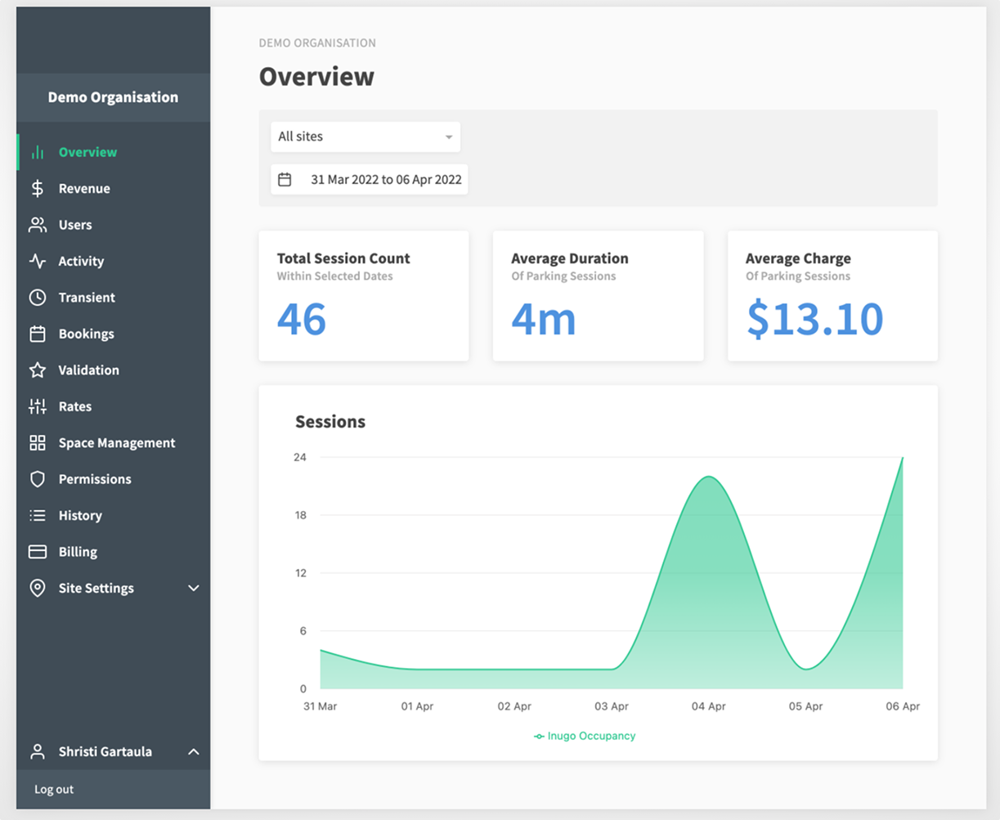
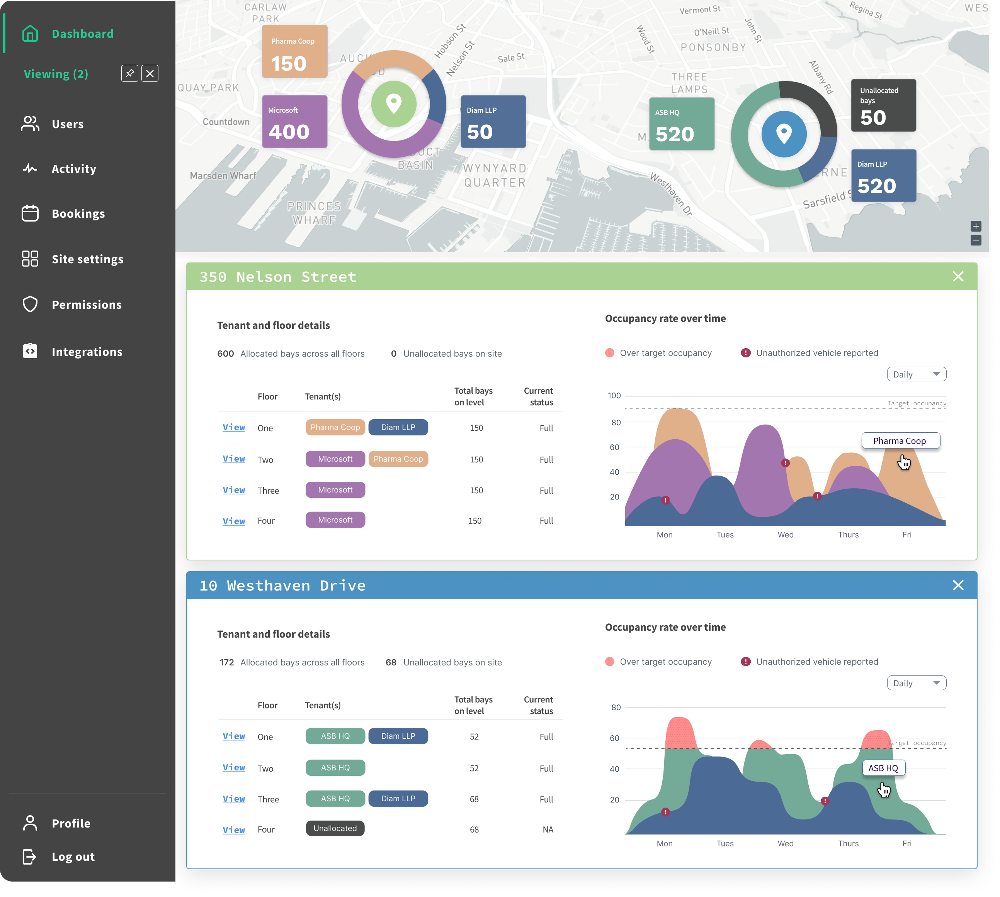
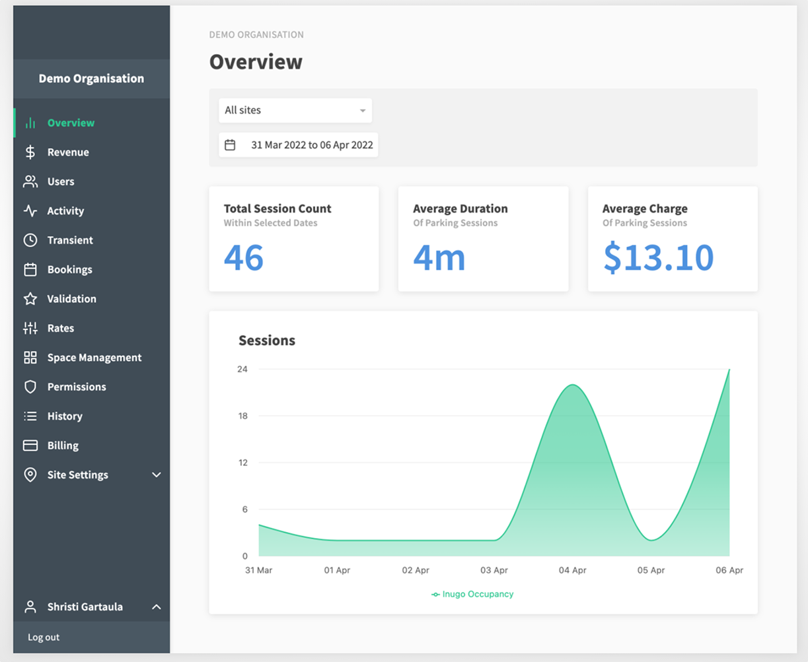
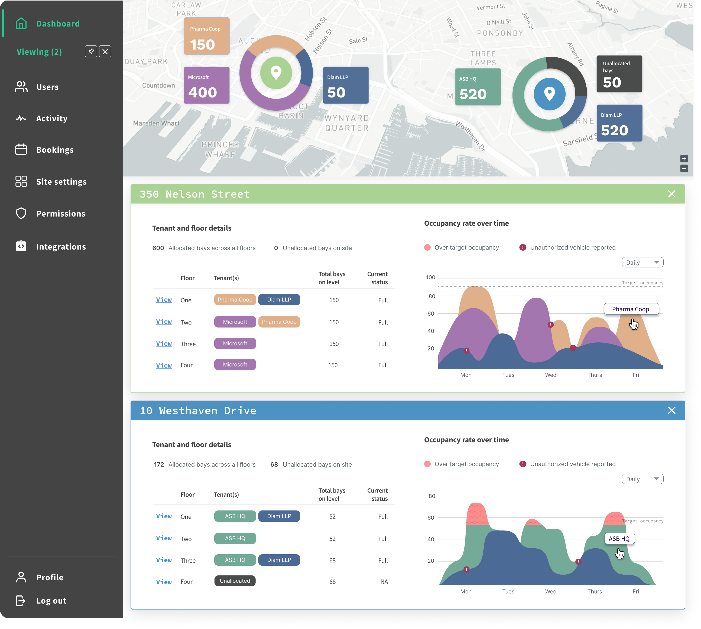
As a rule, existing static table data is transformed into concise charts to reduce visual clutter and improve data comprehension. Originally entire pages were dedicated to static information.
allow for gradual reveal
To avoid information overload, users are introduced to data content gradually, depending on where they are on the user flow.
- Static data from tables become graphical charts to reduce visual clutter and improve data comprehension.
- Pie charts frame the rest of the content displayed in the Dashboard. Interacting with each pie chart reveals specific location details intentionally designed within the map container.
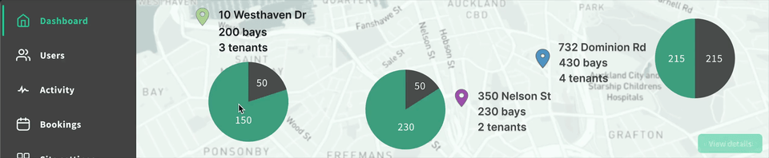
Updating the app to match users' mental model
Besides visual cues, the app's content structure and information architecture did not entirely match the users' mental model. Based on how the original app was presented, I assumed users would:
- Think of tracking or monitoring data they wanted to search for first
- then think about the parking location that pertains to this data
Turns out it's the other way around —
- Users manage multiple parking locations, and therefore they think and complete tasks in terms of one unique location at a time
- The job the user has to do is the same across parking locations but the data set is unique to that specific location
This new discovery helped me better understand what value the data had for users, so I could decide which elements made sense to reveal on the dashboard, at what point, and which ones could be stored away.
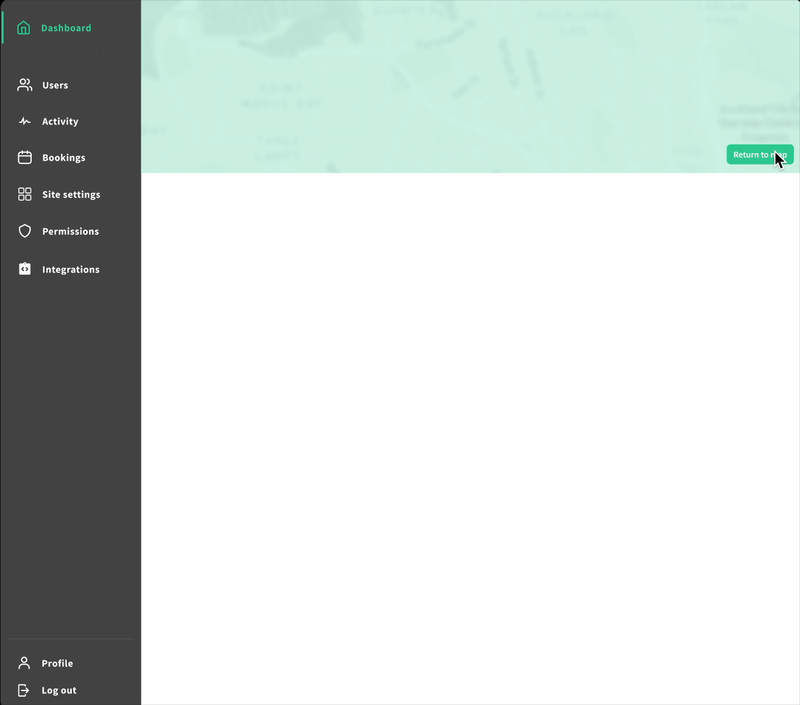
define dashboard by data volatility
By data volatility, I mean the degree to which any given data that the user sees on the application changes over time. By clarifying the user's mental model, we know what kinds of data they prioritize and this data is largely unchanging or static.
- Static data grouped into cards: interestingly (and thankfully), relatively unchanging data (low data volatility) was more important for the dashboard. This is because in the user's frame of mind static data like location and users were the first association to any application task.
-
Transient data grouped selectively: Frequently changing data like tracking vehicles entering
or exiting a building was affecting other elements in entirely separate sections of the menu, without
notifying the user (!). Using entity relationship diagrams (like below) to group data by volatility
and relevance guided me towards a solution within the project scope.
View the nitty-gritty in Challenges: system-status.
Cluttered Sidebar Menu
cluttered side bar menu competes for visual content
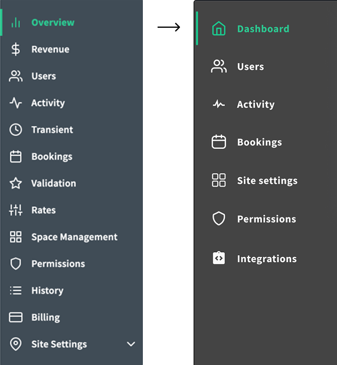
The original menu had 13 items and little affordances to inform users of what tasks or activities are within each one. See below to see how I tackled this problem and reduced the menu.
Step 1: map, question, define menu pages
With a set of questions in hand, I sought to understand the current tasks users completed on each of the linked pages. Answers also clarified and aligned assumptions for everyone involved in the project.
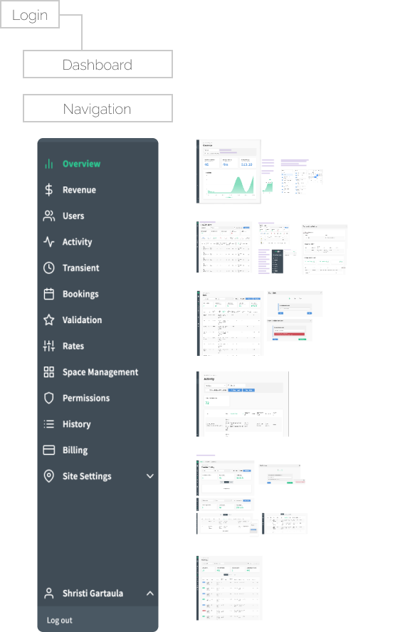
Menu items in the side bar were listed somewhat arbitrarily — some pages dedicated to lengthy tasks (i.e. setting up a new account), others for simple interactions (i.e. search a table).
Questions for each screen:- What can the user see?
- What actions can the user perform (i.e. searching, exporting, etc.)?
- Why is the information valuable for users?
- What does the user want to do with the information?
- Would the user need to perform any actions prior?
Step 2: learn, clarify, define with the client
With the purpose of each screen defined, I was able to construct the relationship between product, people, and the system and where the intended business goals fit.
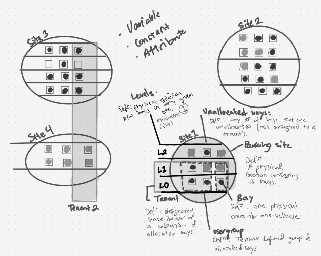
- Understanding the relationship between location of parking and vehicle status
- How the application shows this relationship systemically
- vs. the user's mental model for completing their roles and responsibilities in this industry
Step 3: prioritize screens by usefulness and ease
Equipped with definitions of the screens and their value for the business at large, I measured the total actions users took for each of the 13 pages and charted them against task priority. The results helped narrow down the content in the navigation bar by half.
0–2 actions
+2 actions
high priority task(s)
Actions: Navigating to 1–5 dedicated secondary menus; complex wizard forms.
Example task: adding promotional parking rate
Menu-items: Rates, Transient, Permissions, Users, Space Management
Example task: adding promotional parking rate
Menu-items: Rates, Transient, Permissions, Users, Space Management
low priority task(s)
Action: view to download
Example task: download last year's traffic
Menu-items: History, Validation, Bookings
Example task: download last year's traffic
Menu-items: History, Validation, Bookings
Other infrequently-used components
Example task: update fee amount on table row
Menu-items: Billing
Example task: update fee amount on table row
Menu-items: Billing
Unknown System Updates
unknown updates across system confuses users on the status of the app
While spending time consolidating the menu, I later learned that pages within the menu items had forms, live data tables, and other auto-updating components that trigger system-wide changes without users' awareness.
This was a level of system telemetry that was a key business selling point but there was no observable UI to reflect or communicate these status changes.
For example, when updating parking fees for one vehicle, it can change the billing cycle across multiple accounts without the user knowing.
Given the client's target audience of executive buyers, my design needed to clearly show these dynamic components to facilitate meaningful discussions about the product's value. It also had to be simple. So I used the data I already gathered from menu item interactions — using a 2×2 framework, I looked at the relationship between menu items and their interaction with each other.
Relationship between menu-items
The simpler the relationship, the better the content will be for a dashboard.
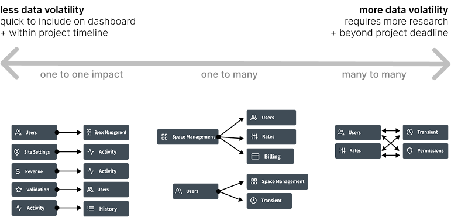
Priority vs. system impact
The higher the priority and the fewer interactive actions, the better the content fits within the dashboard.
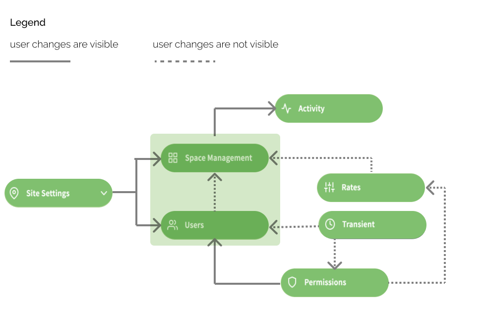
Priority to complete task vs. respective impact on system
The higher the priority and the less it triggers unknown changes across the system, the better the content will be for the dashboard.
Floor Plan UI
standalone design within parking application · replacing onboarding wizard setup
Using physical documents to inspire design for screen
OverviewAs a separate screen within the application, I was asked to brainstorm ways to design for a set-up wizard onboarding new parking sites. The current application had multiple paged forms that took a long time to complete. It wasn't entirely comprehensible either.
SolutionI advocated for translating physical documents into understandable UI screens as closely as possible to the physical task users have to do. That meant taking users' very first step in mapping new parking sites — using a clipboard and pen to jot down parking site numbers — and drawing UI solutions that could support the respective physical task.
A direct visual translation of how users would perform the task would be clearer to understand and less arduous to go through step-by-step.


This complex UI screen was presented as a starting point for further discussions with the rest of the team (to the engineers' relief). With no major constraints, I had fun designing this solution using airline seating reservation flows as inspiration.
Looking Back
reflections on the project
- Biggest challenge: finding ways to simplify dataset relationships by business value
- Quick win: applying heuristic patterns (e.g., "more info = more confusion") to meet the project goal — make the design easy to understand when presenting
- The client had a vague idea of the desired final visual so our discussions were often a delicate balance of ideating and defining at once.
- I was often wary of accepting client design changes, not out of defiance but because I lacked the
client's depth of knowledge of the product. I couldn't justify all their design change requests,
but I also couldn't deny that I didn't know as much as they did.
- But, I quickly trusted the client's feedback. I think, on reflection, it was because of the client's efforts in making me feel involved in their discussions despite my lack of product knowledge. I felt valued.
- This trust was impactful and personally meaningful; it led to a positive work experience that reinforced the value of collaboration in the design process and kept timelines on track.
- This project continues to remind me of why I love design: the best work happens when strong relationships come first.